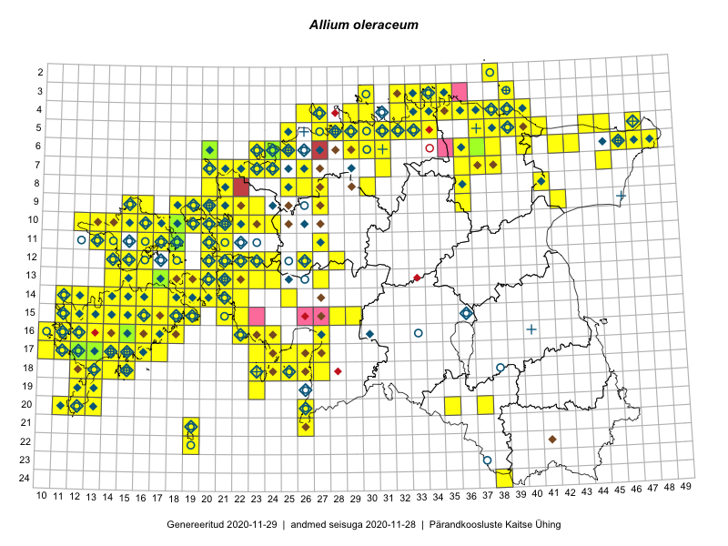

Allium oleraceum
Uuendatud: 2016-12-01
Kaardile koondatud taksonid: Allium oleraceum L.

Kaart põhineb 357 kirjel.
Kuvatud viited 20 esimesele andmebaasikirjele, ülejäänud PlutoFis
- Thea Kull: 2015-04-27: 07-45: ala
- Thea Kull: 2015-04-27: 07-45: ala
- Thea Kull: 2015-04-27: 07-45: ala
- Meeli Mesipuu, Kadri Tali: 2015-07-06: 16-17: ala
- Tiit Hallikma, Toomas Kukk, Indrek Tammekänd: 2015-06-09: 12-28: ala
- Peedu Saar, Liina Oja: 2015-05-21: 16-24: ala
- Peedu Saar, Liina Oja: 2015-05-20: 18-26: ala
- Peedu Saar, Toomas Kukk: 2015-05-28: 10-15: ala
- Peedu Saar, Toomas Kukk: 2015-05-27: 09-16: ala
- Toomas Kukk, Eerik Leibak: 2015-08-09: 14-15: ala
- Toomas Kukk, Eerik Leibak: 2015-08-10: 13-14: ala
- Toomas Kukk, Eerik Leibak: 2015-08-10: 13-15: ala
- Peedu Saar, Toomas Kukk: 2015-05-26: 10-17: ala
- Rein Kalamees, Kersti Püssa: 2015-08-31: 04-32: ala
- Rein Kalamees, Kersti Püssa: 2015-09-06: 03-32: ala
- Tiit Hallikma, Toomas Kukk: 2015-07-21: 05-45: ala
- Rein Kalamees: 2015-08-09: 05-31: ala
- Toomas Kukk, Raivo Kalle: 2015-05-13: 06-38: ala
- Toomas Kukk, Raivo Kalle: 2015-05-13: 07-38: ala
- Toomas Kukk, Raivo Kalle: 2015-05-13: 07-37: ala